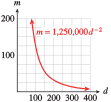

Section 3.2 Integer Exponents
Recall that a positive integer exponent tells us how many times its base occurs as a factor in an expression. For example,
Subsection Negative Exponents
Study the list of powers of \(2\) shown in Table a and observe the pattern as we move up the list from bottom to top. Each time the exponent increases by 1 we multiply by another factor of \(2\text{.}\) We can continue up the list as far as we like.

\(\hphantom{000000000000}\)a.
If we move back down the list, we divide by \(2\) at each step, until we get to the bottom of the list, \(2^{1} = 2\text{.}\)
What if we continue the list in the same way, dividing by \(2\) each time we decrease the exponent? The results are shown in Table b.
As we continue to divide by \(2\text{,}\) we generate fractions whose denominators are powers of \(2\text{.}\) In particular,

\(\hphantom{000000000000}\)b.
Based on these observations, we make the following definitions.
Definition of Negative and Zero Exponents.
These definitions tell us that if the base \(a\) is not zero, then any number raised to the zero power is \(1\text{,}\) and that a negative exponent denotes a reciprocal.
Example 3.27.
\(\displaystyle 2^{-3} = \dfrac{1}{2^3}= \dfrac{1}{8}\)
\(\displaystyle 9x^{-2} = 9 \cdot \dfrac{1}{x^2}= \dfrac{9}{x^2}\)
Caution 3.28.
-
A negative exponent does not mean that the power is negative! For example,
\begin{equation*} 2^{-3}\ne -2^3 \end{equation*} -
In Example 3.27b, note that
\begin{equation*} 9x^{-2} \ne \frac{1}{9x^2} \end{equation*}The exponent, \(-2\text{,}\) applies only to the base \(x\text{,}\) not to \(9\text{.}\)
Checkpoint 3.29. QuickCheck 1.
Checkpoint 3.30. Practice 1.
In the next example, we see how to evaluate expressions that contain negative exponents and how to solve equations involving negative exponents.
Example 3.31.
The body mass index, or BMI, is one measure of a person’s physical fitness. Your body mass index is defined by
where \(w\) is your weight in kilograms and \(h\) is your height in meters. The World Health Organization classifies a person as obese if his or her BMI is \(25\) or higher.
Calculate the BMI for a woman who is \(1.625\) meters (\(64\) inches) tall and weighs \(54\) kilograms (\(120\) pounds).
For a fixed weight, how does BMI vary with height?
The world’s heaviest athlete is the amateur sumo wrestler Emanuel Yarbrough, who weighs \(319\) kg (\(704\) pounds). What height would Yarbrough have to be to have a BMI under \(25\text{?}\)
\(\displaystyle BMI = 54(1.625^{-2})= 54(\dfrac{1}{1.625^2})= 20.45\)
\(BMI = wh^{-2} = \dfrac{w}{h^2}\text{,}\) so BMI varies inversely with the square of height. That is, for a fixed weight, BMI decreases as height increases.
-
To find the height that gives a BMI of \(25\text{,}\) we solve the equation \(25 = 319h^{-2}\text{.}\) Note that the variable \(h\) appears in the denominator of a fraction, so we begin by clearing the denominator—in this case we multiply both sides of the equation by \(h^2\text{.}\)
\begin{equation*} \begin{aligned}[t] 25 \amp = \frac{319}{h^2} \amp\amp \blert{\text{Multiply both sides by }h^2.}\\ 25h^2 \amp = 319 \amp\amp \blert{\text{Divide both sides by }25.}\\ h^2 \amp = 12.76 \amp\amp \blert{\text{Extract square roots.}}\\ h \amp\approx 3.57 \end{aligned} \end{equation*}To have a BMI under \(25\text{,}\) Yarbrough would have to be over \(3.57\) meters, or \(11\) feet \(8\) inches tall. (In fact, he is \(6\) feet \(8\) inches tall.)
Checkpoint 3.32. Practice 2.
Checkpoint 3.33. Pause and Reflect.
Subsection Power Functions
The functions that describe direct and inverse variation are part of a larger family of functions called power functions.
Power Function.
A function of the form
where \(k\) and \(p\) are nonzero constants, is called a power function.
Examples of power functions are
In addition, the basic functions
which we studied in Chapter 2 can be written as
Their graphs are shown below. Note that the domains of power functions with negative exponents do not include zero.

Example 3.34.
Which of the following are power functions?
\(\displaystyle f(x) = \dfrac{1}{3}x^4 + 2\)
\(\displaystyle g(x) = \dfrac{1}{3x^4}\)
\(\displaystyle h(x) = \dfrac{x + 6}{x^3}\)
This is not a power function, because of the addition of the constant term.
We can write \(g(x) = \frac{1}{3}x^{-4}\text{,}\) so \(g\) is a power function.
This is not a power function, but it can be treated as the sum of two power functions, because \(h(x) = x^{-2} + 6x^{-3}\text{.}\)
Checkpoint 3.35. Practice 3.
Checkpoint 3.36. QuickCheck 2.
Most applications are concerned with positive variables only, so many models use only the portion of the graph in the first quadrant.
Example 3.37.
In the Middle Ages in Europe, castles were built as defensive strongholds. An attacking force would build a huge catapult called a trebuchet to hurl rocks and scrap metal inside the castle walls. The engineers could adjust its range by varying the mass of the projectiles. The mass, \(m\text{,}\) of the projectile should be inversely proportional to the square of the distance, \(d\text{,}\) to the target.
Use a negative exponent to write \(m\) as a function of \(d\text{,}\) \(m = f (d)\text{.}\)
The engineers test the trebuchet with a \(20\)-kilogram projectile, which lands \(250\) meters away. Find the constant of proportionality; then rewrite your formula for \(m\text{.}\)
Graph \(m = f (d)\text{.}\)
The trebuchet is \(180\) meters from the courtyard within the castle. What size projectile will hit the target?
The attacking force would like to hurl a \(100\)-kilogram projectile at the castle. How close must the attackers bring their trebuchet?
If we use \(k\) for the constant of proportionality, then \(m = \dfrac{k}{d^2}\text{.}\) Rewriting this equation with a negative exponent gives \(m = kd^{-2}\text{.}\)
-
We substitute \(m = 20\) and \(d = 250\) to obtain
\begin{equation*} \begin{aligned}[t] 20 \amp = k(250)^{-2}\amp\amp \blert{\text{Multiply both sides by }250^2.}\\ 1,250,000 \amp = k \end{aligned} \end{equation*}Thus, \(m = 1,250,000 d^{-2}\text{.}\)
-
We evaluate the function for several values of \(m\text{,}\) or use a calculator to obtain the graph below.
 -
We substitute \(d = \alert{180}\) into the formula:
\begin{equation*} \begin{aligned}[t] m \amp = 1,250,000 (\alert{180} )^{-2} \\ \amp = \frac{1,250,000}{32,400} \\ \amp \approx 38.58 \end{aligned} \end{equation*}The attackers should use a mass of approximately \(38.6\) kilograms.
-
We substitute \(m=\alert{100}\) into the formula and solve for \(d\text{.}\)
\begin{equation*} \begin{aligned}[t] \alert{100} \amp = 1,250,000 d^{-2} \amp\amp \blert{\text{Multiply by }d^2.}\\ 100d^2 \amp = 1,250,000 \amp\amp \blert{\text{Divide by }100.}\\ d^2 \amp = 12,500 \amp\amp \blert{\text{Take sqwuare roots.}} \\ d \amp = \pm \sqrt{12,500} \end{aligned} \end{equation*}They must locate the trebuchet \(\sqrt{12,500}\approx 111.8\) meters from the castle.
The function \(m = \dfrac{k}{d^2}\) is an example of an inverse square law, because \(m\) varies inversely with the square of \(d\text{.}\) Such laws are fairly common in physics and its applications, because gravitational and other forces behave in this way. Here is a more modern example of an inverse square law.
Checkpoint 3.38. Practice 4.
Checkpoint 3.39. Pause and Reflect.
Subsection Working with Negative Exponents
A negative exponent denotes the reciprocal of a power. Thus, to simplify a fraction with a negative exponent, we compute the positive power of its reciprocal.
Example 3.40.
\(\displaystyle \left(\dfrac{3}{5}\right)^{-2}= \dfrac{1}{\left(\dfrac{3}{5}\right)^2} = \left(\dfrac{5}{3}\right)^2 =\dfrac{25}{9}\)
\(\displaystyle \left(\dfrac{x^3}{4}\right)^{-3}=\left(\dfrac{4}{x^3}\right)^3 = \dfrac{(4)^3}{\left(x^3\right)^3}= \dfrac{64}{x^9}\)
Checkpoint 3.41. Practice 5.
Dividing by a power with a negative exponent is equivalent to multiplying by a power with a positive exponent.
Example 3.42.
\(\displaystyle \begin{aligned}[t] \\ \\ \frac{1}{5^{-3}}\amp= 1 \div 5^{-3} \\ \amp = 1 \div \frac{1}{5^3} \\ \amp = 1 \times 5^3 = 125 \end{aligned}\)
\(\displaystyle \begin{aligned}[t]\\ \\ \frac{k^2}{m^{-4}} \amp = k^2 \div m^{-4} \\ \amp = k^2 \div \frac{1}{m^4} \\ \amp = k^2m^4 \end{aligned}\)
Checkpoint 3.43. Practice 6.
Subsection Laws of Exponents
The laws of exponents apply to all integer exponents, positive, negative, and zero. When we allow negative exponents, we can simplify the rule for computing quotients of powers.
Quotient of Powers.
II. \(\displaystyle{\frac{a^m}{a^n}= a^{m-n}\hphantom{blank} (a \ne 0)}\)
For example, by applying this new version of the law for quotients, we find
which is consistent with our previous version of the rule,
Checkpoint 3.44. QuickCheck 3.
For reference, we restate the laws of exponents below. The laws are valid for all integer exponents \(m\) and \(n\text{,}\) and for \(a, b \ne 0\text{.}\)
Laws of Exponents.
\(\displaystyle \displaystyle{a^m\cdot a^n = a^{m+n}}\)
\(\displaystyle \displaystyle{\frac{a^m}{a^n}=a^{m-n}}\)
\(\displaystyle \displaystyle{\left(a^m\right)^n=a^{mn}}\)
\(\displaystyle \displaystyle{\left(ab\right)^n=a^n b^n}\)
\(\displaystyle \displaystyle{\left(\frac{a}{b}\right)^n=\frac{a^n}{b^n}}\)
Example 3.45.
You can check that each of the calculations in Example 3.45 is shorter when we use negative exponents instead of converting the expressions into algebraic fractions.
Checkpoint 3.46. QuickCheck 4.
Checkpoint 3.47. Practice 7.
Caution 3.48.
The laws of exponents do not apply to sums or differences of powers. We can add or subtract like terms, that is, powers with the same exponent. For example,
but we cannot add or subtract terms with different exponents. Thus, for example,
At the start of this section, we saw that \(2^0 = 1\text{,}\) and in fact \(a^0 = 1\) as long as \(a \ne 0\text{.}\) Now we can see that this definition is consistent with the laws of exponents. The quotient of any (nonzero) number divided by itself is \(1\text{.}\) But by applying the second law of exponents, we also have
Thus,
Zero as Exponent.
For example,
Checkpoint 3.49. Pause and Reflect.
Subsection Section Summary
Subsubsection Vocabulary
Look up the definitions of new terms in the Glossary.
Power function
Inverse square law
Subsubsection CONCEPTS
A negative exponent denotes a reciprocal: \(a^{-n} = \dfrac{1}{a^n}\text{,}\) if \(a\ne 0\text{.}\)
Any number (except zero) raised to the zero power is \(1\text{:}\) \(a^0 = 1\text{,}\) if \(a\ne 0\text{.}\)
A function of the form \(f (x) = kx^p\text{,}\) where \(k\) and \(p\) are constants, is called a power function.
Laws of Exponents.
- \(\displaystyle \displaystyle{a^m\cdot a^n = a^{m+n}}\)
- \(\displaystyle \displaystyle{\frac{a^m}{a^n}=a^{m-n}}\)
- \(\displaystyle \displaystyle{\left(a^m\right)^n=a^{mn}}\)
- \(\displaystyle \displaystyle{\left(ab\right)^n=a^n b^n}\)
- \(\displaystyle \displaystyle{\left(\frac{a}{b}\right)^n=\frac{a^n}{b^n}}\)
Subsubsection STUDY QUESTIONS
-
Explain the difference between each pair of expressions.
\(-2^3\) and \(2^{-3}\)
\(-x^4\) and \(x^{-4}\)
\(-2^n\) and \(2^{-n}\)
Write a power function for "\(y\) varies inversely with the cube of \(x\text{.}\)"?
Explain why it makes sense to define \(10^0 = 1\text{.}\)
Why is zero excluded from the domain of \(f (x) = 3x^{-2}\text{?}\)
-
Choose a value for \(\) to show that the following statement is false:
\begin{equation*} 2x^{-2} + 4^{x-1} = 6^{x-3} \hphantom{00000}\text{False!} \end{equation*}
Subsubsection SKILLS
Practice each skill in the Homework problems listed.
Simplify expressions with negative exponents: #1–12
Solve equations involving negative exponents: #19–24
Write formulas for power functions: #17 and 18, 25–34
Evaluate and analyze power functions: #13–16, 25–34
Apply the laws of exponents to simplify expressions: #35–62
Exercises Homework 3.2
1.
Make a table showing powers of \(3\) from \(3^{-5}\) to \(3^5\text{.}\) Illustrate why defining \(3^0 = 1\) makes sense.
2.
Make a table showing powers of \(5\) from \(5^{-4}\) to \(5^4\text{.}\) Illustrate why defining \(5^0 = 1\) makes sense.
For Problems 3–6, compute each power.
3.
\(\displaystyle 2^3\)
\(\displaystyle (-2)^3 \)
\(\displaystyle 2^{-3}\)
\(\displaystyle (-2)^{-3} \)
4.
\(\displaystyle 4^2\)
\(\displaystyle (-4)^2 \)
\(\displaystyle 4^{-2}\)
\(\displaystyle (-4)^{-2} \)
5.
\(\displaystyle \left(\dfrac{1}{2} \right)^3\)
\(\displaystyle \left(-\dfrac{1}{2} \right)^3 \)
\(\displaystyle \left(\dfrac{1}{2} \right)^{-3}\)
\(\displaystyle \left(-\dfrac{1}{2} \right)^{-3} \)
6.
\(\displaystyle \left(\dfrac{1}{4} \right)^2\)
\(\displaystyle \left(-\dfrac{1}{4} \right)^2 \)
\(\displaystyle \left(\dfrac{1}{4} \right)^{-2}\)
\(\displaystyle \left(-\dfrac{1}{4} \right)^{-2} \)
For Problems 7–12, write without negative exponents and simplify.
7.
\(\displaystyle 2^{-1}\)
\(\displaystyle (-5)^{-2} \)
\(\displaystyle \left(\dfrac{1}{3} \right)^{-3} \)
\(\displaystyle \dfrac{1}{(-2)^{-4}} \)
8.
\(\displaystyle 3^{-2}\)
\(\displaystyle (-2)^{-3} \)
\(\displaystyle \left(\dfrac{3}{5} \right)^{-2} \)
\(\displaystyle \dfrac{1}{(-3)^{-3}} \)
9.
\(\displaystyle \dfrac{5}{4^{-3}}\)
\(\displaystyle (2q)^{-5} \)
\(\displaystyle -4x^{-2} \)
\(\displaystyle \dfrac{8}{b^{-3}} \)
10.
\(\displaystyle \dfrac{3}{2^{-6}} \)
\(\displaystyle (4k)^{-3} \)
\(\displaystyle -7x^{-4} \)
\(\displaystyle \dfrac{5}{a^{-5}} \)
11.
\(\displaystyle (m-n)^{-2} \)
\(\displaystyle y^{-2}+y^{-3} \)
\(\displaystyle 2pq^{-4} \)
\(\displaystyle \dfrac{-5y^{-2}}{x^{-5}} \)
12.
\(\displaystyle (p+q)^{-3} \)
\(\displaystyle z^{-1}-z^{-2} \)
\(\displaystyle 8m^{-2}n^2 \)
\(\displaystyle \dfrac{-6y^{-3}}{x^{-3}} \)
Use your calculator to fill in the tables in Problems 13 and 14. Round your answers to two decimal places.
13.
\(f(x)=x^{-2}\)
\(x\) \(1\) \(2\) \(4\) \(8\) \(16\) \(f(x)\) \(\hphantom{0000} \) \(\hphantom{0000} \) \(\hphantom{0000} \) \(\hphantom{0000} \) \(\hphantom{0000} \) What happens to the values of \(f (x)\) as the values of \(x\) increase? Explain why.
\(x\) \(1\) \(0.5\) \(0.25\) \(0.125\) \(0.0625\) \(f(x)\) \(\hphantom{0000} \) \(\hphantom{0000} \) \(\hphantom{0000} \) \(\hphantom{0000} \) \(\hphantom{0000} \) What happens to the values of \(f (x)\) as the values of \(x\) decrease toward \(0\text{?}\) Explain why.
14.
\(g(x)=x^{-3}\)
\(x\) \(1\) \(2\) \(4.5\) \(6.2\) \(9.3\) \(g(x)\) \(\hphantom{0000} \) \(\hphantom{0000} \) \(\hphantom{0000} \) \(\hphantom{0000} \) \(\hphantom{0000} \) What happens to the values of \(g(x)\) as the values of \(x\) increase? Explain why.
\(x\) \(1.5\) \(0.6\) \(0.1\) \(0.03\) \(0.002\) \(f(x)\) \(\hphantom{0000} \) \(\hphantom{0000} \) \(\hphantom{0000} \) \(\hphantom{0000} \) \(\hphantom{0000} \) What happens to the values of \(g(x)\) as the values of \(x\) decrease toward \(0\text{?}\) Explain why.
15.
-
Use your calculator to graph each of the following functions on the window
\begin{align*} {\text{Xmin}} \amp = -5 \amp\amp {\text{Xmax}} = 5\\ {\text{Ymin}} \amp = -2 \amp\amp {\text{Ymax}} = 10 \end{align*}- \(\displaystyle f(x)=x^2\)
- \(\displaystyle f(x)=x^{-2} \)
- \(\displaystyle f(x)=\dfrac{1}{x^2} \)
- \(\displaystyle f(x)=\left(\dfrac{1}{x} \right)^2 \)
Which functions have the same graph? Explain your results.
16.
-
Use your calculator to graph each of the following functions on the window
\begin{align*} {\text{Xmin}} \amp = -3 \amp\amp {\text{Xmax}} = 5\\ {\text{Ymin}} \amp = -5 \amp\amp {\text{Ymax}} = 5 \end{align*}- \(\displaystyle f(x)=x^3\)
- \(\displaystyle f(x)=x^{-3} \)
- \(\displaystyle f(x)=\dfrac{1}{x^3} \)
- \(\displaystyle f(x)=\left(\dfrac{1}{x} \right)^3 \)
Which functions have the same graph? Explain your results.
For Problems 17–18, write each expression as a power function using negative exponents.
17.
- \(\displaystyle F(r)=\dfrac{3}{r^4} \)
- \(\displaystyle G(w)=\dfrac{2}{5w^3} \)
- \(\displaystyle H(z)=\dfrac{1}{(3z)^2} \)
18.
- \(\displaystyle h(s)=\dfrac{9}{s^3} \)
- \(\displaystyle f(v)=\dfrac{3}{8v^6} \)
- \(\displaystyle g(t)=\dfrac{1}{(5t)^4} \)
For Problems 19–24, solve.
19.
\(6x^{-2}=3.84 \)
20.
\(0.8w^{-2} = 1.25 \)
21.
\(12 + 0.04t^{-3} = 175.84 \)
22.
\(854 - 48z^{-3} = 104 \)
23.
\(100 - 0.15v^{-4} = 6.25 \)
24.
\(8100p^{-4} - 250 = 3656.25 \)
25.
When an automobile accelerates, the power, \(P\text{,}\) needed to overcome air resistance varies directly with a power of the speed, \(v\text{.}\)
-
Use the data and the graph to find the scaling exponent and the constant of variation. Then write a formula for \(P\) as a power function of \(v\text{.}\)
\(v\) (mph) \(10\) \(20\) \(30\) \(40\) \(P\) (watts) \(355\) \(2840\) \(9585\) \(22,720\) 
Find the speed that requires \(50,000\) watts of power.
If you increase your speed by \(50\%\text{,}\) by what factor does the power requirement increase?
26.
The power, \(P\text{,}\) generated by a windmill varies directly with a power of wind velocity, \(v\text{.}\)
-
Use the data and the graph to find the scaling exponent and the constant of variation. Then write a formula for \(P\) as a power function of \(v\text{.}\)
\(v\) (mph) \(10\) \(20\) \(30\) \(40\) \(P\) (watts) \(15\) \(120\) \(405\) \(960\) 
Find the wind velocity needed to generate \(500\) watts of power.
If the wind speed drops by half, what happens to the power generated?
27.
The “Rule of 70” is used to estimate how long it takes an investment to double in value when interest is compounded annually. The doubling time, \(D\text{,}\) is inversely proportional to the interest rate, \(i\text{.}\) (Note that \(i\) is expressed as a percent, not as a decimal fraction. For example, if the interest rate is \(8\%\text{,}\) then \(i = 8\text{.}\))
-
Use the data and the graph to find the constant of proportionality and write \(D\) as a power function of \(i\text{.}\)
\(i\) (mph) \(4\) \(6\) \(8\) \(10\) \(D\) (watts) \(17.5\) \(11.67\) \(8.75\) \(7\) If the interest rate increases from \(5\%\) to \(6\%\text{,}\) how will the doubling time change?
28.
The f-stop setting on a camera regulates the size of the aperture and thus the amount of light entering the camera. The f-stop \(f\) is inversely proportional to the diameter, \(d\text{,}\) of the aperture.
-
Use the data and the graph to find the constant of proportionality and write \(d\) as a power function of \(f\text{.}\) Values of \(d\) have been rounded to one decimal place.
\(f\) \(2.8\) \(4\) \(5.6\) \(8\) \(11\) \(d\) \(17.9\) \(12.5\) \(8.9\) \(6.3\) \(4.5\) 
Why are the f-stop settings labeled with the values given in the table?
As you stop down the aperture from one f-value to the next, by what factor does \(d\) increase?
29.
The Stefan-Boltzmann law relates the total amount of radiation emitted by a star to its temperature, \(T\text{,}\) in kelvins, by the following formula:
where \(R\) is the radius of the star, \(L\) is its luminosity, and \(s = 5.7\times 10^{-8} \text{ watt/m}^2\) is a constant governing radiation. (See Algebra Skills Refresher Scientific Notation to review scientific notation.)
Write a formula for luminosity as a power function of temperature for a fixed radius.
The radius of the Sun is \(R = 9.96\times 10^8\) meters, and its luminosity is \(L = 3.9\times 10^{26}\) watts. Calculate the temperature of the Sun.
30.
Poiseuille's law for the flow of liquid through a tube can be used to describe blood flow through an artery. The rate of flow, \(F\text{,}\) in liters per minute is proportional to the fourth power of the radius, \(r\text{,}\) divided by the length, \(L\text{,}\) of the artery.
Write a formula for the rate of flow as a power function of radius.
If the radius and length of the artery are measured in centimeters, then the constant of variation, \(k = 7.8\times 10^5\text{,}\) is determined by blood pressure and viscosity. If a certain artery is \(20\) centimeters long, what should its radius be in order to allow a blood flow of \(5\) liters per minute?
31.
Airplanes use radar to detect the distances to other objects. A radar unit transmits a pulse of energy, which bounces off a distant object, and the echo of the pulse returns to the sender. The power, \(P\text{,}\) of the returning echo is inversely proportional to the fourth power of the distance, \(d\text{,}\) to the object. A radar operator receives an echo of \(5\times 10^{-10}\) watts from an aircraft \(2\) nautical miles away.
Express the power of the echo received in picowatts. (\(1\) picowatt \(= 10^{-12}\) watts.)
Write a function that expresses \(P\) in terms of d using negative exponents. Use picowatts for the units of power.
-
Complete the table of values for the power of the echo received from objects at various distances.
\(d\) (nautical miles) \(4\) \(5\) \(7\) \(10\) \(P\) (picowatts) \(\hphantom{0000} \) \(\hphantom{0000}\) \(\hphantom{0000}\) \(\hphantom{0000}\) Radar unit scan typically detect signals as low as \(10^{-13}\) watts. How far away is an aircraft whose echo is \(10^{-13}\) watts?
Sketch a graph of \(P\) as a function of \(d\text{.}\) Use units of picowatts on the vertical axis
Convert \(10^{-13}\) watts to picowatts.
32.
The lifetime of a star is roughly inversely proportional to the cube of its mass. Our Sun, which has a mass of one solar mass, will last for approximately \(10\) billion years.
Write a power function for the lifetime, \(L\text{,}\) of a star in terms of its mass, \(m\text{.}\)
Sketch a graph of the function using units of solar mass on the horizontal axis.
How long will a star that is \(10\) times as massive as the Sun last?
One solar mass is about \(2\times 10^{30}\) kilograms. Rewrite your formula for \(L\) with the units of mass in kilograms.
How long will a star that is half as massive as the Sun last?
33.
The amount of force or thrust generated by the propeller of a ship is a function of two variables: the diameter of the propeller and its speed, in rotations per minute. The thrust, \(T\text{,}\) in pounds, is proportional to the square of the speed, \(r\text{,}\) and the fourth power of the diameter, \(d\text{,}\) in feet.
Write a formula for the thrust in terms of the speed if the diameter of the propeller is \(2\) feet.
A propeller of diameter \(2\) feet generates a thrust of \(1000\) pounds at \(100\) rotations per minute. Find the constant of variation in the formula for thrust.
Sketch a graph of the thrust as a function of the propeller speed for a propellor of diameter \(4\) feet. If the speed of the propeller is doubled, by what factor does the thrust increase?
34.
Refer to Problem 33.
Write a formula for the thrust, \(T\text{,}\) in terms of the diameter of the propeller if its speed is \(100\) rotations per minute.
A propeller of diameter \(4\) feet generates a thrust of \(32,000\) pounds at \(100\) rotations per minute. Find the constant of variation in the formula for thrust.
Sketch a graph of the thrust as a function of the diameter of the propeller at a speed of \(100\) rotations per minute. If the diameter of the propeller is doubled, by what factor does the thrust increase?
For Problems 35–40, use the laws of exponents to simplify and write without negative exponents.
35.
\(\displaystyle a^{-3}\cdot a^8 \)
\(\displaystyle 5^{-4} \cdot 5^{-3} \)
\(\displaystyle \dfrac{p^{-7}}{p^{-4}} \)
\(\displaystyle \left(7^{-2} \right)^{5} \)
36.
\(\displaystyle b^{2}\cdot b^{-6} \)
\(\displaystyle 4^{-2} \cdot 4^{-6} \)
\(\displaystyle \dfrac{w^{-9}}{w^{2}} \)
\(\displaystyle \left(9^{-4} \right)^{3} \)
37.
\(\displaystyle \left(4x^{-5} \right)\left(5x^2 \right) \)
\(\displaystyle \dfrac{3u^{-3}}{9u^{9}} \)
\(\displaystyle \dfrac{5^6 t^0}{5^{-2}t^{-1}} \)
38.
\(\displaystyle \left(3y^{-8} \right)\left(2y^4 \right) \)
\(\displaystyle \dfrac{4c^{-4}}{8c^{-8}} \)
\(\displaystyle \dfrac{3^{10}s^{-1}}{3^{-5}s^0} \)
39.
\(\displaystyle \left(3x^{-2}y^3 \right)^{-2} \)
\(\displaystyle \left(\dfrac{6a^{-3}}{b^{2}} \right)^{-2} \)
\(\displaystyle \dfrac{5h^{-3}(h^4)^{-2}}{6h^{-5}} \)
40.
\(\displaystyle \left(2x^{3}y^{-4} \right)^{-3} \)
\(\displaystyle \left(\dfrac{a^{4}}{4b^{-5}}\right)^{-3} \)
\(\displaystyle \dfrac{4v^{-5}(v^{-2})^{-4}}{3v^{-8}} \)
For Problems 41–44, write each expression as a sum of terms of the form \(kx^p\text{.}\)
41.
\(\displaystyle \dfrac{x}{3}+\dfrac{3}{x} \)
\(\displaystyle \dfrac{x-6x^2}{4x^3} \)
42.
\(\displaystyle \dfrac{2}{x^2}-\dfrac{x^2}{2} \)
\(\displaystyle \dfrac{5x+1}{(3x)^2} \)
43.
\(\displaystyle \dfrac{2}{x^4}\left(\dfrac{x^2}{4}+\dfrac{x}{2}-\dfrac{1}{4} \right) \)
\(\displaystyle \dfrac{x^2}{3}\left(\dfrac{2}{x^4}-\dfrac{1}{3x^2}+\dfrac{1}{2} \right) \)
44.
\(\displaystyle \dfrac{9}{x^3}\left(\dfrac{x^3}{3}-1-\dfrac{1}{x^3} \right) \)
\(\displaystyle \dfrac{x^2}{2}\left(\dfrac{3}{x}-\dfrac{5}{x^3}+\dfrac{7}{x^5} \right) \)
For Problems 45–50, use the distributive law to write each product as a sum of power functions.
45.
\(x^{-1}(x^2 - 3x + 2)\)
46.
\(3x^{-2}(2x^4 +x^2 -4)\)
47.
\(-3t^{-2}(t^2 - 2 - 4t^{-2})\)
48.
\(-t^{-3}(3t^2 - 1 - t^{-2})\)
49.
\(2u^{-3}(-2u^3 - u^2 + 3u)\)
50.
\(2u^{-1}(-1 - u - 2u^2)\)
For Problems 51–54, factor as indicated, writing the second factor with positive exponents only.
51.
\(4x^2 + 16x^{-2} = 4x^{-2}(~~ \text{?} ~~)\)
52.
\(20y - 15y^{-1} = 5y^{-1} (~~ \text{?} ~~)\)
53.
\(3a^{-3} - 3a + a^3 = a^{-3} (~~ \text{?} ~~)\)
54.
\(2 - 4q^{-2} - 8q^{-4} = 2q^{-4} (~~ \text{?} ~~)\)
55.
Is it true that \((x + y)^{-2} = x^{-2} + y^{-2}\text{?}\) Explain why or why not.
Give a numerical example to support your answer.
56.
Is it true that \((a - b)^{-1} = a^{-1} - b^{-1}\text{?}\) Explain why or why not.
Give a numerical example to support your answer.
57.
Show that \(x + x^{-1} = \dfrac{x^2 +1}{x}\text{.}\)
Show that \(x^3 + x^{-3} = \dfrac{x^6 +1}{x^3}\text{.}\)
Write \(x^n + x^{-n}\) as an algebraic fraction. Justify your answer.
58.
Show that \(x^{-m} + x^{-n} = \dfrac{x^n +x^m}{x^{n +m}}\text{.}\)
If \(m \lt n\text{,}\) show that \(x^{-m} + x^{-n} = \dfrac{x^{n-m} +1}{x^{n} }\text{.}\)
By rewriting the expressions in Problems 59–62 as fractions, verify that the laws of exponents hold for negative exponents . Show where you apply the corresponding law for positive exponents. Here is the fourth law as an example:
59.
\(a^{-2}a^{-3}=a^{-5} \)
60.
\(\dfrac{a^{-6}}{a^{-2}}=a^{-4}\)
61.
\(\dfrac{a^{-2}}{a^{-6}}=a^{4}\)
62.
\(\left(a^{-2}\right)^{-3}=a^6 \)